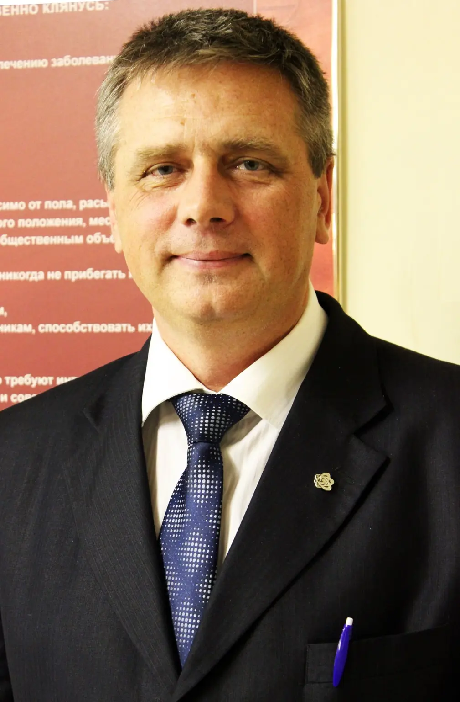

Всемирная сертификация
Всемирный сертификат психотерапевта
- Номер сертификата
- 010 WCPC gpRU
- Реестр
- Российский реестр обладателей Всемирного сертификата
Семейный психотерапевт · художник · мастер
Андрей Сергеевич Горшков соединяет медицинский опыт, психотерапевтическую практику и работу с цветом, формой и материалом.


Андрей Сергеевич одновременно включён в два российских реестра обладателей международных сертификатов психотерапевта.
Всемирная сертификация
Европейская сертификация
Профессиональные компетенции
Формат работы определяется запросом: индивидуальная или семейная консультация, супервизия, семинар или авторская творческая практика.
Актуальная профессиональная визиткаРабота с отношениями в паре и семье, повторяющимися конфликтами, кризисами и изменениями семейной системы.
Сочетание методов под конкретную историю человека, его состояние, ресурсы и задачу консультации.
Внимание к телесным реакциям, напряжению и связи физического самочувствия с эмоциональным опытом.
Цвет, форма, рисунок и ручная работа как способы наблюдать внутренний процесс и находить новые смыслы.
Супервизорская и преподавательская практика указана в актуальной профессиональной визитке Андрея Сергеевича.
Авторские образовательные форматы, практические занятия и работа с групповыми процессами.
Портфолио мастерской
Персональные лабиринты, мандалы и ИПИ-картины. Каждая работа создаётся вручную и существует как самостоятельное авторское произведение.


В галерее использованы подлинные фотографии авторских работ, опубликованные на официальном сайте мастерской в 2024 году.
Архив коллекцииОб авторе
Медицина и мастерская появились в его жизни почти одновременно.
Андрей Сергеевич родился 12 октября 1959 года в посёлке Мга Ленинградской области — в семье врача и машиниста поезда.
Медицинские книги матери и мастерская отца задали две главные линии: помощь человеку и создание вещей своими руками. Позже они соединились в профессиональной практике и авторской мастерской.
Профессиональный путь
От клинической медицины к целостной практикеЛечебный факультет ЛСГМИ; работа врачом-травматологом.
Травматология, ортопедия и военно-полевая хирургия.
Психосинтез, затем системная семейная, мультимодальная и телесно-ориентированная психотерапия.
Всемирный сертификат психотерапевта № 010 WCPC gpRU.
Консультации, супервизия, семинары и создание авторских произведений.
Видео и практика


Видео о мастерской и авторском подходе Андрея Сергеевича. Рядом — подтверждённая группа мастерской во «ВКонтакте».
Выставки и публикации
Подтверждённые публикации о выставках в Санкт-Петербурге и Псковской области.
Контакты
Для записи на консультацию, вопроса о семинаре или авторской работе позвоните Андрею Сергеевичу либо напишите в группу мастерской.
+7 921 919-73-33